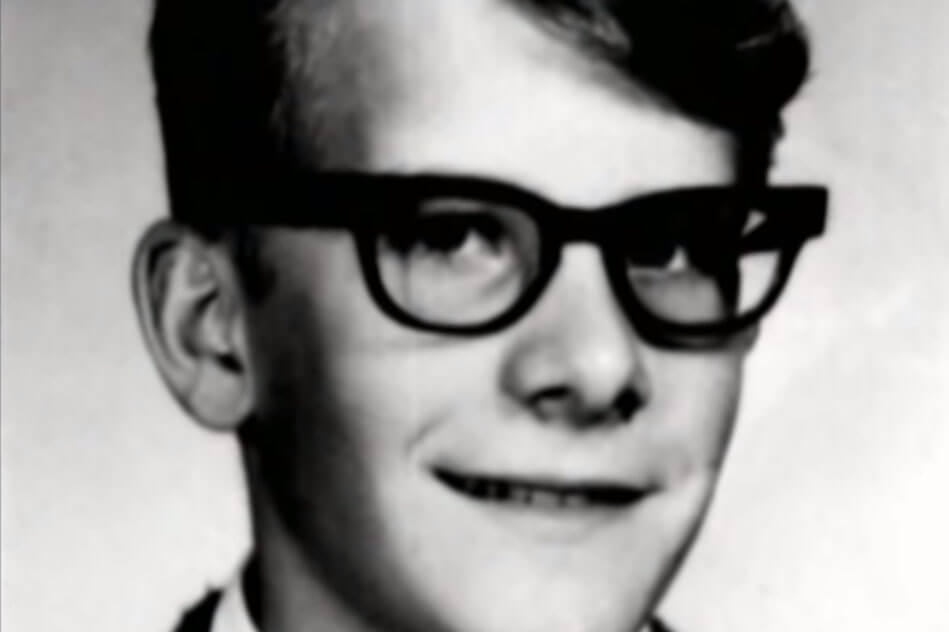
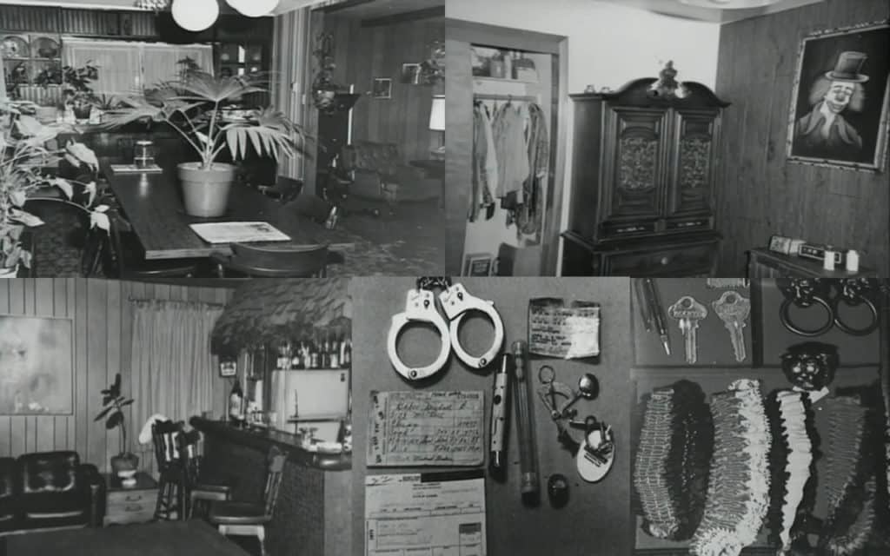
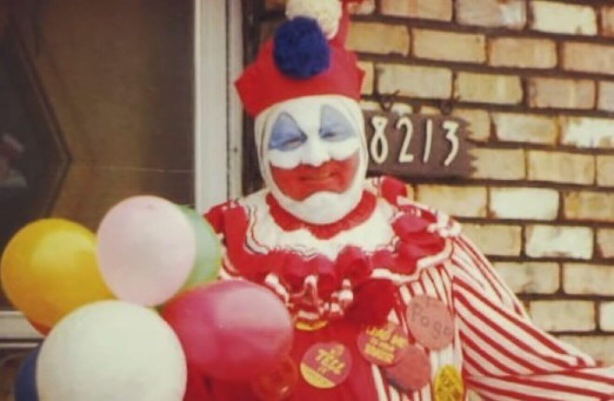

John Wayne Gacy (17 de marzo de 1942 - 10 de mayo de 1994) fue un asesino en serie y violador estadounidense, conocido como Killing Clown. Acusado de torturar, violar y matar al menos a 33 adolescentes entre 1972 y 1978 en el condado de Cook, Estado de
Illinois en el área metropolitana de Chicago, fue condenado a 21 cadenas perpetuas y 12 penas de muerte. Todos los asesinatos conocidos perpetrados por Gacy se cometieron en su casa en el vecindario de Norwood Park. tus victimas fueron llevados
a su casa por la fuerza o por medio de engaños; todas menos su primera víctima, que fue apuñalada hasta la muerte, fueron asesinadas por asfixia o estrangulamiento con un torniquete improvisado. Gacy enterró a 26 de sus víctimas bajo el suelo
de tu casa. Otras tres víctimas fueron enterradas en otras partes de su residencia, mientras que los cadáveres de los últimos cuatro fueron arrojados al río Des Plaines. Condenado por 33 asesinatos, Gacy fue condenado a muerte el 13 de marzo
de 1980 por 12 de estos delitos. Pasó 14 años en el corredor de la muerte antes de ser ejecutado mediante inyección letal en el Centro Correccional de Stateville el 10 de mayo de 1994. Gacy se hizo conocido como el "Payaso Asesino" debido
a desde su labor benéfica, eventos de recaudación de fondos y fiestas infantiles en las que se disfrazaba de "Pogo the Clown" o "Patches the Clown", personajes creados por él.
Biografia
"
John Wayne Gacy nació en Chicago el 17 de marzo de 1942, el segundo hijo y el único hijo de tres hijos de John Stanley (20 de junio de 1900 - 25 de diciembre de 1969), mecánico de automóviles de pasajeros y veterano de la Primera Guerra Mundial. y su
esposa Marion Elaine Robinson (4 de mayo de 1908 - 6 de diciembre de 1989), ama de casa. Gacy era de ascendencia polaca y danesa. Sus abuelos paternos (que deletreaban sus apellidos como "Gatza" o "Gaca") emigraron a los EE. UU. de Polonia
(de una región que entonces formaba parte de Alemania) Cuando era niña, Gacy tenía sobrepeso y no era atlética. Estaba muy unido a sus hermanas y a su madre, pero tenía una relación difícil con su padre, un alcohólico que abusaba de él físicamente.
su esposa e hijos. A lo largo de su infancia, Gacy se esforzó por hacer que su severo padre se sintiera orgulloso de él, pero rara vez obtuvo su aprobación. Este roce fue una constante durante su infancia y adolescencia. Uno de los recuerdos
más antiguos. La infancia de Gacy fue cuando su padre lo golpeaba con un cinturón de cuero cuando tenía cuatro años por estropear accidentalmente partes de un motor que su padre había ensamblado. En otra ocasión su padre lo golpeó en la cabeza
con el palo de una escoba, dejándolo inconsciente Su padre lo menospreciaba regularmente y, a menudo, lo comparaba desfavorablemente con sus hermanas, acusándolo despectivamente de ser "idiota y estúpido". Gacy, mientras comenta regularmente
que él "nunca ha sido bueno en A los ojos de su padre, siempre negó con vehemencia que lo odiara en los interrogatorios posteriores a su arresto. Cuando tenía seis años, Gacy robó un camión de juguete de una tienda cercana. Su madre lo obligó
a regresar a la tienda. , devolver el juguete y pedir disculpas a los propietarios. Su madre le hizo saber a su padre y él golpeó a Gacy con su cinturón como castigo.Luego de este incidente, la madre de Gacy trató de protegerlo del abuso físico
y verbal de su padre, aunque solo logró hacerlo. con Gacy siendo acusado de ser un marica y un "niño de mamá" que "probablemente se convertiría en un maricón". En 1949, el padre de Gacy se enteró de que su hijo y otro niño fueron atrapados
tocando sexualmente a una niña más joven. con un afilador de navajas como castigo. En el mismo año, Gacy fue abusado sexualmente por un amigo de su familia, un contratista que llevó a Gacy a pasear en su camioneta y luego lo tocó de manera
inapropiada. Gacy nunca dijo nada sobre estos incidentes a su padre y temía que lo hiciera responsable de ellos. Debido a una afección cardíaca, Gacy se vio obligado a evitar practicar deportes durante sus años escolares. Un estudiante promedio
con pocos amigos, él era objeto ocasional de acoso por parte de los niños del barrio y sus compañeros de escuela. Era conocido por ayudar al inspector escolar y ofrecerse como voluntario para hacer mandados para maestros y vecinos. Durante
el cuarto grado, Gacy comenzó a desmayarse. Ocasionalmente fue hospitalizado en su nombre y en 1957 fue hospitalizado por apendicitis. Gacy luego estimó que entre los 14 y los 18 años debió haber pasado alrededor de un año en el hospital por
cuenta de tales problemas; también atribuyó la caída en sus calificaciones escolares a faltar a la escuela. Su padre sospechaba que sus problemas de salud eran un intento de ganar simpatía y atención y lo acusó abiertamente de fingir mientras
estaba postrado en la cama del hospital. Aunque su madre, hermanas y algunos amigos nunca dudaron de su enfermedad, la condición médica de Gacy nunca fue diagnosticada de manera concluyente.Uno de los amigos de la escuela secundaria de Gacy
recordó de las muchas veces que su padre se burlaba de él o golpeaba a su hijo sin provocación alguna. En una ocasión en 1957, el mismo amigo presenció un incidente en su casa en el que su padre, sin ningún motivo, comenzó a gritarle y luego
lo golpeó Su madre trató de intervenir. El amigo de Gacy recordó que él simplemente "levantó las manos para defenderse", y agregó que nunca le devolvió el golpe a su padre durante estos ataques. En 1960, a los 18 años, Gacy se involucró en
en política trabajando como asistente electoral para un candidato del Partido Demócrata en su vecindario. Tal decisión le valió más críticas por parte de su padre, quien llegó a llamarlo "ingenuo". gacy más tarde especuló que tal decisión
puede haber sido un intento de obtener una aceptación que nunca obtuvo de su padre. En el mismo año en que Gacy se convirtió en candidato por el Partido Demócrata, su padre le compró un automóvil, a pesar de su registro. auto para quedarse
con su padre hasta que Gacy completara los pagos mensuales. Estos pagos tardaron varios años en completarse y su padre confiscaría las llaves de su auto si no obedecía. En una ocasión, en 1962, Gacy hizo copias de las llaves después de que
su padre confiscara los originales. En respuesta, su padre quitó la cubierta del distribuidor del automóvil y la mantuvo con él durante tres días. Gacy recordó que, a raíz de este incidente, se sintió “completamente enfermo; desgastado." Cuando
su padre reemplazó la capa de distribuidor, Gacy dejó la casa de sus padres y condujo hasta Las Vegas, Nevada, donde tomó un trabajo en el servicio de ambulancias antes de ser transferido a trabajar como asistente. en el Tanatorio de Palma.
Trabajó en ese papel durante tres meses antes de regresar a Chicago.Como encargado de la morgue, Gacy dormía en una cama detrás de la sala de embalsamamiento.En este papel, vio a los funerarios embalsamar cadáveres y luego confesó que, una
noche cuando estaba solo, entró en el ataúd de un adolescente varón fallecido, acariciando y abrazando el cadáver antes de sentir una sensación de conmoción. Gacy luego afirmaría haber estado involucrada en actos de necrofilia aproximadamente
dos veces mientras trabajaba en Palm Mortuary. Se justificaba diciendo que los cadáveres que profanaba eran "cosas muertas" que "no dirían nada a nadie". Gacy llamó a su madre al día siguiente y le preguntó si su padre le permitiría regresar
a su casa. Su padre accedió y el mismo día Gacy volvió a vivir con su familia en Chicago. A su regreso, a pesar de que no había Después de completar la escuela secundaria, Gacy fue admitido con éxito en Northwestern Business College, donde
se graduó en 1963. Más tarde, Gacy ocupó un puesto como pasante de gestión en Nunn-Bush Shoe Company. En 1964, el La firma lo transfirió a Springifield para trabajar como vendedor. Fue ascendido a gerente de su departamento. En marzo del mismo
año, se comprometió con Marlynn Myers, una compañera de trabajo en el departamento que dirigía. Después de Después de un noviazgo de nueve meses, se casaron en septiembre de 1964. Poco después, su suegro compró tres restaurantes Kentucky Fried
Chicken en Waterloo, Iowa, y Gacy y su esposa se mudaron a Waterloo para poder administrar restaurantes, y se acordó que se mudarían a la casa de los padres de Marlynn (que quedó vacante para la pareja). en nombre de la organización, siendo
finalmente elegido el "hombre clave" de la institución en 1964. En el mismo año, Gacy tuvo su segunda relación homosexual. Según Gacy, consintió en este incidente después de que uno de sus colegas en la sucursal Jaycee de Springfield lo emborracha
y lo invita a pasar la noche en su sofá; Luego, el colega le practicó sexo oral mientras estaba borracho. Alrededor de 1965, Gacy ascendió al cargo de vicepresidente de la sede de Springfield de Jaycee. año, fue nombrado el tercer Jaycee más
importante del estado de Illinois.
Crímenes explicados por el sentenciado
"
En julio de 1971 conoció a un joven, Michael Reed, que fue contratado por Gacy para su empresa de reformas, a cambio de alojamiento y sexo. Gacy lo golpeó con un martillo en la cabeza y el chico pudo escapar al día siguiente. El 2 de enero de 1972 recogió
a un chico de 15 años, Timothy McCoy. Al día siguiente lo mató a puñaladas en su propio domicilio y lo enterró bajo su casa, siendo el primer asesinato confeso de Gacy. Esto causaba malos olores y atraía moscas a su domicilio. Hacia 1975,
Carole Hoff ya sospechaba que las continuas ausencias nocturnas de su marido no eran por trabajo, sino para mantener relaciones sexuales con adolescentes en el sótano de su casa, aunque no imaginaba los crímenes que allí mismo se cometían.
El 29 de julio de 1975, John Butkovitch, de 16 años, fue violado y estrangulado, tras una pausa delictiva de más de tres años. El posterior divorcio de Gacy, en marzo de 1976, le permitió tener más tiempo y más espacio para sus actividades
delictivas, iniciando una dramática escalada de crímenes a un ritmo de uno cada tres o cuatro semanas. En 1977, David Daniel, que por aquel entonces tenía 28 años, declaró que John Wayne Gacy le ofreció llevarlo a la estación de autobuses,
pero Daniel rehusó. También dijo que Gacy era muy insistente, llegándole a pedir siete veces e incluso ofreciéndole marihuana. De las dos víctimas que fueron reportadas como "supervivientes", Daniel fue el único vivo para relatar el procedimiento
de John Wayne Gacy, el cual consistía en atarlos, torturarlos de diversas formas, sodomizarlos y por último estrangularlos. En junio de 1978 y tras asesinar a Timothy O'Rourke, de 20 años, tuvo que abandonar el cadáver en una zona fluvial,
ya que no cabían más cadáveres enterrados en la casa. Ninguna sospecha recayó en Gacy hasta el 12 de diciembre de 1978, cuando fue investigado después de la desaparición del adolescente de 15 años Robert Piest, a quien su compañera de trabajo
vio por última vez camino a una entrevista de trabajo en casa de Gacy. Un registro en casa de John, en Norwood Park, reveló diversos artículos relacionados con otras desapariciones. Curiosamente fue arrestado días más tarde por tráfico de
drogas. El 22 de diciembre de 1978, Gacy acudió a sus abogados y confesó sus crímenes, harto de la constante vigilancia policial. Llegó incluso a decir que eran sus escoltas e invitarlos a su casa. Declaró haber asesinado por primera vez en
enero de 1972, cuando al clavar el cuchillo en el cuerpo de un joven y ver como la sangre brotaba del cuerpo, sintió una sensación de excitación y esto comenzó a gustarle. También confesó haber matado a 33 individuos e indicó la ubicación
de 29 de los cuerpos a la policía. Estaban enterrados en su propiedad. Llegó incluso a presentar a la policía un plano con la ubicación exacta de los cadáveres. Para el día 29 de diciembre de 1978, tras 6 días de excavaciones, la policía ya
había desenterrado a 27 cuerpos. Las otras cuatro víctimas, dijo, las había arrojado al cercano río Des Plaines. Al menos una de las víctimas fue recogida en la estación de autobuses. Los individuos más jóvenes tenían solo catorce años y el
mayor veintiuno. Siete de las víctimas nunca fueron identificadas. Los cuerpos fueron descubiertos desde diciembre de 1978 hasta abril de 1979, cuando la última víctima conocida, Robert Piest, fue hallada en el río Illinois. En 1998, mientras
se realizaban reparaciones en el estacionamiento trasero de la casa de la madre de Gacy, las autoridades encontraron restos de al menos cuatro personas más.En 2010, se reabrió el caso. Desenterraron 8 de los cuerpos que a la fecha no habían
podido ser identificados y gracias a los avances tecnológicos, se extrajo ADN de las víctimas y se pudo identificar a la víctima #19 como William George Bundy. Más tarde en 2017, se logró identificar a otro joven; víctima #24 James Byron Haakenson.
En 2021, se logró identificar a otra víctima de Gacy, Wayne Alexander. Al día de hoy quedan 5 víctimas de John Gacy sin identificar.
Juicio y ejecución
"
El 6 de febrero de 1980 comenzó el juicio de Gacy en Chicago. Durante el juicio, se declaró inocente, alegando problemas de orden mental.Sin embargo, su testimonio fue rotundamente rechazado, ya que se le realizaron estudios, dando resultados negativos,
es decir, que no tenía ni padecía de problemas mentales. Su abogado argumentó que John tenía lapsos de locura temporal en el momento de cada asesinato, pero antes y después, recobraba la normalidad para atraer y disponer de las víctimas. En
un momento del juicio, la defensa de Gacy intentó afirmar que los 33 asesinatos fueron muertes accidentales como parte de una asfixia erótica, pero el forense del condado de Cook demostró con evidencia que estas afirmaciones eran imposibles.
Además, Gacy ya había confesado a la policía y era incapaz de suprimir tal evidencia. John Wayne Gacy fue hallado culpable el 13 de marzo y fue sentenciado a varias cadenas perpetuas y varias penas de muerte. Fue ejecutado por inyección letal
el 10 de mayo de 1994. Sus últimas palabras, que revelan su personalidad y su no arrepentimiento por sus crímenes, fueron: «Matarme no hará regresar a ninguna de las víctimas. ¡El Estado me está asesinando! ¡Nunca sabrán dónde están los otros!
¡Bésenme el culo!»
Posibles explicaciones
"
Algunos señalan la pobre relación con su padre, alcohólico y abusador, un trauma en la cabeza y los consiguientes desmayos de su adolescencia como la base de sus actos. También se especula que la matanza de jóvenes era la expresión subconsciente del odio
a sí mismo por su propia homosexualidad. A menudo declaró que se desinhibía en el momento del sexo. De todos modos, sus víctimas fueron mayoritariamente hombres heterosexuales y el atributo común entre ellos era la juventud. Después de su
ejecución, el cerebro de Gacy fue extraído. Actualmente es propiedad de la Dra. Helen Morrison, que entrevistó a John y a otros asesinos seriales en un intento por aislar los rasgos comunes en su personalidad. Los abogados de Gacy contrataron
a un psiquiatra forense para que examinara el cerebro de Gacy después de morir. Los resultados revelaron que no había anormalidades. El especialista afirmó que John no encajaba en ningún perfil psicológico propio de los asesinos en serie y
que probablemente la razón de su actuación no se sabrá jamás. Durante el juicio, la Dra. Morrison apareció como testigo psiquiátrico y declaró que Gacy tenía «la estructura emocional de un infante».
Gacy como artista
"
Durante los 14 años que pasó en prisión, solía pintar con óleo. Su tema favorito eran los payasos. Dijo que usaba su personaje de payaso como álter ego. Sus pinturas incluyen imágenes de Blancanieves y el asesino en serie Jeffrey Dahmer. Muchas de sus
pinturas se vendieron en una subasta después de su muerte. Una de sus obras más famosas es en la que aparece el cantante punk GG Allin, quien solía visitar a Gacy en prisión y con quien mantenía correspondencia hasta que falleció el 28 de
junio de 1993. La pintura ahora es del bajista y hermano de Allin, Merle Allin. Una reproducción de la imagen en blanco y negro puede ser vista en la portada de la banda sonora del documental de GG Allin, Hated: GG Allin and the Murder Junkies.
Sus pinturas también han sido usadas como adorno del álbum de Acid Bath When the Kite String Pops. Gacy hizo pinturas para el artista, músico y actor Glen Meadmore, con quien también mantuvo correspondencia por un tiempo. Un retrato de Meadmore,
pintado por Gacy, aparece en la portada de su disco Hot, Horny and Born Again. Otra de sus pinturas pertenece a Dani Filth, de la banda de metal Cradle of Filth. Lux Interior, cantante de la influyente banda Garage/Rockabilly The Cramps, también
mantuvo una relación epistolar con Gacy, llegando este a obsequiarle con un retrato del músico. El cineasta John Waters también posee un cuadro de Gacy que, según él, está colgado en la habitación de huéspedes de su casa, «para que las visitas
no se queden demasiado tiempo».
 "
"
 "
"